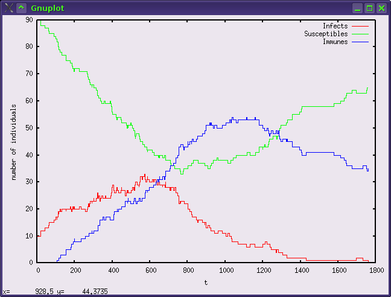
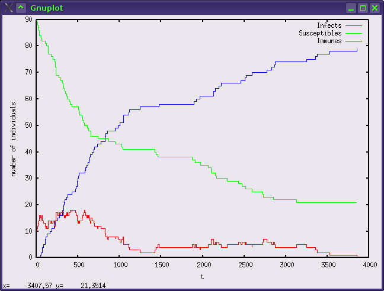
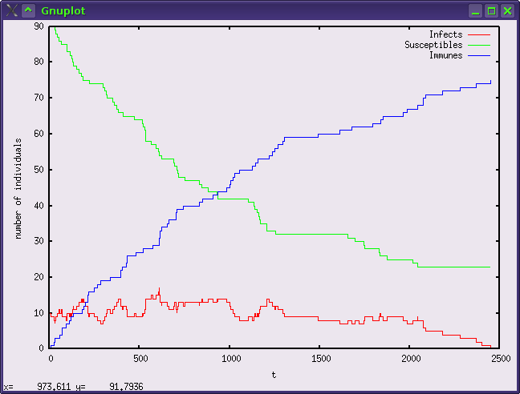
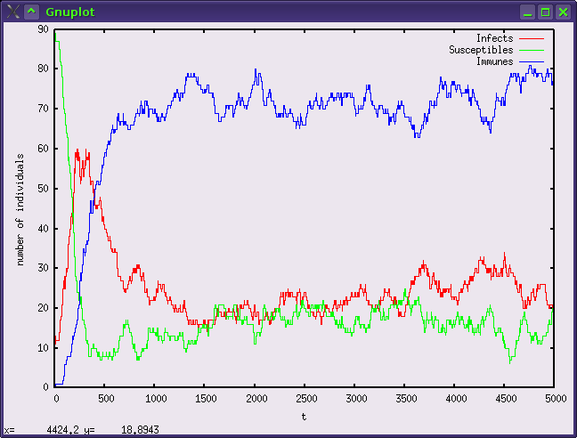

def live(self): ## Process Execution Method """Method that defines the life cycle of the individual.""" while 1: [...] # life cycle of a susceptible individual while self.health_status == 'susceptible': wait = self.e.wait(self.e.contact_rate) yield hold, self, wait self.get_in_contact() [...]
Di seguito ho simulato il modello SIR, che prevede l'immunizzazione dell'individuo infetto dopo la sua guarigione, e alcune sue varianti.
def get_immune(self): """The individual becomes immune.""" self.health_status = 'immune' [...] def live(self): ## Process Execution Method """Method that defines the life cycle of the individual.""" while 1: [...] # life cycle of an infect individual while self.health_status == 'infect': event, wait = self.e.next_event(dict( contact = self.e.contact_rate, recover = self.e.recover_rate, death = self.e.death_rate)) yield hold, self, wait if event == 'recover': if self.e.immune_after_recovery == True: self.get_immune() else: self.get_susceptible() [...] # life cycle of an immune individual while self.health_status == 'immune': if self.e.immunization_vanish_rate != 0: wait = self.e.wait(self.e.immunization_vanish_rate) yield hold, self, wait self.get_susceptible() else: yield passivate, self
4.1. Modello SIR con immunizzazione temporanea
Il terzo modello simulato prevede un periodo di immunizzazione temporanea (parametro immunization_vanish_rate diverso da zero) dopo la guarigione.
Vengono quindi definiti nuovi parametri del costruttore della classe Epidemic:
| Parametro | Descrizione |
|---|---|
| initial_immunes | il numero degli individui immuni all'inizio della simulazione; |
| immune_after_recovery | impostato a True, permette la transizione allo stato “immune”; |
| immunization_vanish_rate | diverso da zero, determina con che frequenza l'immunità svanisce. |
Eseguendo la simulazione dimostrativa (“python SIR_temporary_immunization.py”), ottengo il seguente output:
Simulation ended prematurely: infection ended, no more infects. Simulation duration: 7.915376 seconds Situation at the end of the simulation: - infects: 0 - susceptibles: 65 immunes: 35
e il grafico seguente, che mostra chiaramente l'esplosione iniziale dell'epidemia e la sua regressione nel momento in cui il numero di suscettibili è ridotto e il numero di immuni cresce:

4.2. Modello SIR con immunizzazione permanente
Il quarto modello simulato è il modello SIR con immunizzazione permanente. I parametri di questo modello sono gli stessi del precedente con immunizzazione temporanea: va soltanto impostato a zero il parametro immunization_vanish_rate.
L'output della simulazione dimostrativa (python SIR_permanent_immunization.py) è il seguente:
Simulation ended prematurely: infection ended, no more infects. Simulation duration: 10.229361 seconds Situation at the end of the simulation: - infects: 0 - susceptibles: 21 - immunes: 79
e il grafico non è dissimile dal precedente (ovviamente in questo caso la linea degli immuni è monotona non decrescente):

4.3. Modello SIR con possibilità di decesso degli infetti
Nella quinta simulazione dimostrativa, ho aggiunto la possibilità di decesso di un individuo infetto. A questo scopo ho aggiunto il parametro:
| Parametro | Descrizione |
|---|---|
| death_rate | determina la frequenza con cui nel modello avviene una morte causata dall'infezione. |
Eseguendo la simulazione (python SIR_permanent_immunization_with_death.py), ho ottenuto il seguente output:
Simulation ended prematurely: infection ended, no more infects. Simulation duration: 14.483893 seconds Situation at the end of the simulation: - infects: 0 - susceptibles: 23 - immunes: 75 - deaths for the epidemic: 2
e il grafico seguente:

4.4. Modello SIR con dinamiche vitali
Ho poi realizzato un'ulteriore variazione al modello SIR aggiungendo le dinamiche vitali (nascite e morti naturali), in particolare gestendo i decessi come un evento casuale indipendente dallo stato di salute dell'individuo colpito
def die(self, naturally=True): """An individual dies, for natural reasons or for the epidemic.""" if naturally == True: self.e.total_natural_deaths += 1 else: [...] [...] self.e.all_individuals.remove(self) [...] def live(self): ## Process Execution Method """Method that defines the life cycle of the individual.""" while 1: # considering the natural death probability if self.e.natural_death_prob: if self.e.rng.random() <= self.e.natural_death_prob: self.die(naturally=True) yield passivate, self [...]
e facendo dipendere le nascite dal numero di contatti tra individui.
def get_in_contact(self): """The individual get in contact with another individual.""" contact = self.choose_contact() # infection? if self.e.rng.random() <= self.e.infect_prob: [...] # birth of a child? # the contact between a man and a woman will happen in one case out of two if self.e.newborn_prob != 0 and self.e.rng.random() <= 0.5 and \ self.e.rng.random() <= self.e.newborn_prob: [...] newborn_health_status = 'susceptible' self.e.add_an_individual(newborn_health_status)
Ho aggiunto quindi al costruttore della classe Epidemic i seguenti parametri:
| Parametro | Descrizione |
|---|---|
| newborn_prob | la probabilità che da un contatto si abbia un neonato; |
| natural_death_prob | la probabilità che avvenga un decesso naturale. |
La simulazione che ho eseguito (python SIR_temporary_immunization_with_vital_dynamics.py) ha portato al seguente risultato:
Simulation ended prematurely: infection ended, no more infects. Simulation duration: 40.477773 seconds Situation at the end of the simulation: - infects: 0 - susceptibles: 73 - immunes: 32 - deaths for the epidemic: 7 - births: 14 - deaths for natural reasons: 2
e al seguente grafico:

4.5. Modello SIR con infezioni e immunizzazioni “verticali”
Infine, ho variato ulteriormente questo modello prevedendo l'immunizzazione o l'infezione “verticale”, cioè la possibilità che il neonato nasca infetto, se uno dei due genitori è infetto, o immune, se la madre è immune.
def get_in_contact(self): """The individual get in contact with another individual.""" contact = self.choose_contact() # infection? if self.e.rng.random() <= self.e.infect_prob: [...] # birth of a child? # the contact between a man and a woman will happen in one case out of two if self.e.newborn_prob != 0 and self.e.rng.random() <= 0.5 and \ self.e.rng.random() <= self.e.newborn_prob: if self.e.newborn_can_be_infect == True and \ ((self.health_status == 'infect' and contact.health_status != 'immune') or \ (contact.health_status == 'infect' and self.health_status != 'immune')): newborn_health_status = 'infect' # The mother will be the immune parent only in the half of the births. # Then, only in these cases the newborn will receive "vertically" the immunity if self.e.newborn_can_be_immune == True and self.e.rng.random() <= 0.5 and \ (self.health_status == 'immune' or contact.health_status == 'immune'): newborn_health_status = 'immune' else: newborn_health_status = 'susceptible' self.e.add_an_individual(newborn_health_status)
Per far ciò, ho previsto che il costruttore della classe Epidemic accettasse due nuovi parametri booleani:
| Parametro | Descrizione |
|---|---|
| newborn_can_be_infect | se True, il neonato può essere infetto; |
| newborn_can_be_immune | se True, il neonato può essere immune. |
Il risultato di una simulazione d'esempio (python SIR_temporary_immunization_with_vital_dinamycs_vertical) è stata la seguente:
Simulation duration: 91.220459 seconds Situation at the end of the simulation: - infects: 18 - susceptibles: 21 - immunes: 77 - deaths for the epidemic: 16 - births: 34 - deaths for natural reasons: 2
con il seguente grafico:
